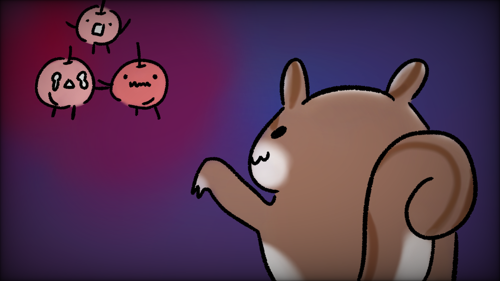
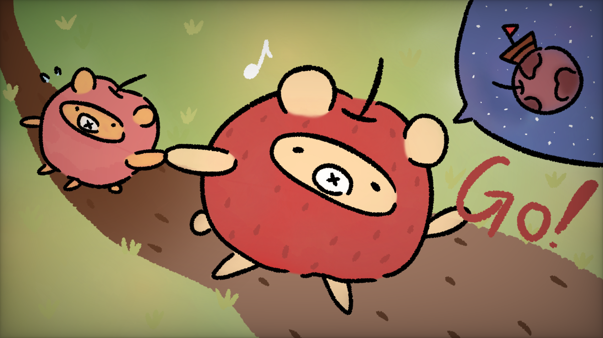
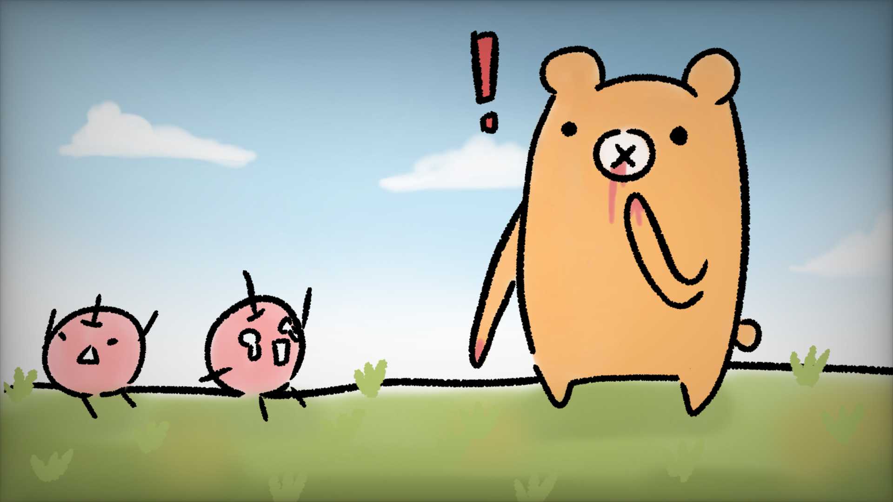

類型 單人冒險
平台 Windows電腦
從2021年12月開始決定製作，2022年2月完成，程式、美術、構想皆為獨立完成。
之前期末專題是以跨越障礙物的遊玩方式加上3D建模的作品製作一款遊戲，但是當時學的東西太基本，後來上了手機遊戲程式設計的課，也上網看了很多教學影片，結合玩過第一代的朋友給的回饋，最後做出這個遊戲。
用鍵盤操作小蘋果移動、跳躍，滑鼠控制選擇。 蒐集蘋果並越過障礙物就可以過關，總共有三種不同的結局。


故事背景
小蘋果撿到一張如何變成熊的秘笈，他覺得如果他變成熊就有能力保護同伴，因此他決定踏上旅程。

結局一(沒有找到寶物)
最後還是一顆弱小的蘋果，無法保護同伴。

結局二(找到一個寶物)
變成不是熊也不是蘋果的物種，被冒險途中遇到的嘲諷蘋果熊拉去環遊世界，開啟新生活。

結局三(找到兩個寶物)
成功變成了熊，卻也受不了蘋果香甜的誘惑，被同伴們看到自己吃蘋果的模樣。